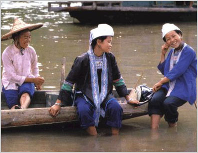

粗略考虑，壮语在运用上主要有以下特点：
1、音调丰富，有较强的乐感。
2、描述性词汇丰富，有利于口语表达和文学描写。
3、拥有大量汉语方言借词，是学习汉语的基础。
4、语法接近汉语，是跟汉族和其他民族沟通的桥梁。
5、有不少独特的修辞手法，表情达意技巧丰富。
6、方言土语多，影响民族内部交流。
7、北部方言声母多但缺乏送气塞声声母，要学习其他语言困难。
8、抽象词汇有限，不利于理论表述。
9、没有强势方言，标准壮语缺乏社会基础。
10、壮语教学跟文化脱节，语言地位脆弱。
——摘自僚人家园论坛

语言
壮语，属汉藏语系壮侗语族壮泰语支。使用人口在 1700万以上，是中国使用人口最多的少数民族语言．主要分布在广西壮族自治区、云南省文山壮族苗族自治州、广东省连山壮族瑶族自治县境内，云南省的开远、元阳、广东省的怀集，贵州省的从江和湖南省的江华等县(自治县)也有分布。各地壮语有不同的名称。广西的中部、西部、北部、东北部和广东连山等地壮族称自已的语言为壮话，武鸣称板话，河池称曼话、凌云、凤山称僚话，德靖、岘广土语区称依话、央话、省话，云南文山和广西龙州称岱话，等等。根据壮语语音特点和词汇差异，可分为北部和南部两大方言，每一种方言内部又分为数个土语区，各土语区基本语词汇相同率在 60％～86％之间。壮语一般有a、e、i、o、u、w(或y)6个基本元音。绝大多数地方复合韵母中的元音有长短的对立。一般有30个声母左右，少的不足20个，多的有40多个。复合声母比较少，除武鸣、邕宁一带有pl、kl、ml之外，其他地方主要是腭化、唇化性质。壮语的韵母分3类：单元音韵母；复合元音韵母；带辅音韵尾的韵母。壮语是有声调的语言，多数地方有8个调，即6个舒声调和2个促声调。壮语中民族固有词的单音节词占优势，多音单纯词较少。有丰富的近义词。合成词有复合式、附加式两类。单音动词、单音形容词可带上摹声绘形的后附音节，以表示不同的性状和程度，加强表达的准确性和生动性。壮语各土语的词汇分类及语法规律相当一致。词汇一般分名词、动词、形容词、数词、量词、代词、副词．介词、连词、助词、语气词和声貌词等12类。以词序和虚词作为最主要的语法手段。句子成分的基本次序是主-谓-宾-补，定语大多在名词之后，指示代词一般放在修饰成分的最末尾。状语通常在谓语之前，有时在谓语之后。壮语受汉浯的影响较大，吸收了不少汉语词汇和一些语法形式。
壮语北部方言
壮语方言之一，分布在广西的驮娘江、右江、邕江一线附近及其以北地区和云南省的邱北、师宗、富宁、广南(北部)等地。广东连山、怀集等地壮语也属北部方言。使用人口约占壮族人口的70％以上。一般有30个声母左右，大都有r声类。除连山土语外，一般没有送气的清塞音声母。韵母多在 70～80个之间。一般有6个舒声调和两个促声调，很少有调类分化。方言内部一致性大，各土语的语法几乎没有什么差别，民族固有词汇相同率在85%左右。语音稍有差别，但对应整齐。
北部方言分7个土语区：
桂北土语区——广西龙胜、三江、融安、永福、融水、罗城、环江、河池、南丹、天峨、东兰、巴马。
柳江土语区——广西来宾、柳江、宜山、柳城、忻城(北部)。
红水河土语区——广西贺县、阳朔、荔浦、鹿寨、桂平、贵港、武宣、象州、来宾(河南)、上林、忻城(南部)、都安、马山，广东连山，湖南江华。
邕北土语区——广西邕宁(北部)、横县、宾阳、武鸣、平果。
右江土语区——广西田东、田阳、百色。
桂边土语区——广西凤山、田林、隆林、西林、凌云、乐业，云南富宁、广南(北部)。
邱北土语区——云南邱北、师宗。
壮语南部方言
壮语方言之一。分布在广西的右江、邕江以南地区和云南省文山壮族苗族自治州的南部。自称有土话、侬话、岱话等种。由于本方言区在地域上与越南接壤，语言上与国外相应的Tho、Nong、Tay (土、侬、岱)可通。有送气的清音声母ph、th、phj、khj、 khw等。一般没有r声类，局部保留也只出现在双调数，多数地方没有j，v声母。韵母有简化的现象，不少地方有声调的分化现象，有些则有合并现象。语法与北部方言差别不大，只有一些虚词和词头、词尾的不同。方言内部词汇-致性较小，如德保和钦州壮语固有词的相同率只在63％左右。
南部方言分为5个土语区：
邕南土语区——广西邕宁(南部)、隆安、扶绥、上思、钦州、防城。
左江土语区——广西天等、大新、崇左、宁明、龙州、凭祥。 德靖土语区——广西靖西、德保、那坡。
砚广土语区——云南广南(南部)、砚山、马关、文山、西畴、麻栗坡(北部)。
文麻土语区——云南文山(南部)、麻栗坡(南部)、马关 (东部)、开远、元阳以及滇东南的一些县。
大抵以郁江、右江、邕江为两大方言界线。各土语内部仍分若干小土语区，且常常隔一条河就不尽相同，有些地方甚至一个村寨都有某些有别于邻村的特点。（《广西百科全书》，《壮族文化概论》）
文字
壮族先民在长期的生产实践和社会活动中，为了便于记事和进行交流，在商周时期就创造了刻划文字符号。这种文字在壮族创世史诗《布洛陀》中称为 sawgoek，意为本源书，即最古老的文字。从广西出土的战国至汉代的文物中看到，这种刻划符号开始出现对物象轮廓的勾勒，有向象形文字发展的趋势，它比结绳记事前进了一步。后来，随着汉文化在壮族地区的广泛传揪播，壮族先民又吸取并仿造汉字六书的构字方格，创造出sawndip，意即生造字。这就是史籍所称的"土俗字"，又叫"方块土俗字"或"方块壮字"。这种文字有的是借用汉字的偏旁部首重新组合而成，有的是借用汉字注壮语音义，有些是创造的类象形字。
本源书和土俗字是壮族文字发展史上两个阶段的表现形式。学术界一般认为，壮族的土俗字始于唐，兴于宋而盛于明清，既有碑刻，且有大量的师公唱本和民歌抄本传世。壮族的许多传统长诗、神话故事等藉此得以保存。由于历史的原因，这种文字没有得到规范和统一，至今亦只在民间的一定范围里应用。现经初步搜集整理，已将流传的土俗字集注成《古壮字字典》出版。"古壮字"这一概念的确认，既反映了其作为一种民族文字的历史存在及作用，又能把传统壮字与今新创的拼音壮文区别开来。它表明壮族的文字历史悠久，并随着时代的前进又发展到了一个新的阶段。 拼音壮文是在本世纪5O年代创造的。建国后，人民政府为了提高壮族人民的科学文化水平，帮助壮族人民创造了拼音壮文。这套拼音壮文以拉丁字母为字母，以壮族北部方言为基础方言，以武鸣县的壮语语音为标准音。1957年11月29日，国务院通过了壮文方案，井批准在壮族地区试点推行。至此，壮族人民有了合法的、统一的文字。
古壮字
壮语称sawndip，意即生僻字或生造字，又称土俗书、土俗字、方块壮字，现定名为古壮字。它主要是借助汉字六书的构字方法进行再创造，是壮族古文字发展史上突飞阶段的产物。土俗字产生的年代，目前学术界大多认为是从唐代开始。唐永淳元年(682年)澄洲(治所在今广西上林县)刺史韦敬办撰写的《澄洲无虞县六合坚固大宅颂》碑文中，就有□（夕+一）、□（林+田）等字，这些已成为形、声、义统一的、结构固定的文字。到了宋代，土俗字的运用更加广泛，据范成大于淳熙二年(1175年)所著的《桂海虞衡志》载："边远俗陋，牒诉券约专用土俗书，桂林诸邑皆然。今姑记临桂数字。虽甚鄙野，而偏傍亦有依附。 □(音矮)，不长也。□同(音稳)，坐于门中，稳也。□（大+坐）(亦音稳)，大坐亦稳也。□（亻+小）(音袅)，小儿也，□（不+大）(音动)，人瘦弱也。□（不+生）(音终)，人亡绝也。（石+打）(音腊)，不能举足也。（女+大）（音大），女大及娣也。□（石+山）(音磡)，山石之岩窟也。閂月(音撺)，门横关也。他不能悉纪。余阅讼牒二年，习见之。"关于土俗字的字形及其应用，宋代庄禅的《鸡肋篇》和周去非的《岭外代答》等书也有所记载。到了明代，土俗字已成为壮族民间的书面文学用字。清初浔州(治所在今广西桂平县)推官吴淇的《粤风续九》中，采录有俍、壮的"扇歌"、"担歌"和"巾歌"，即壮族男女把情歌写在扇面，刻在扁担和织(绣)在花巾上以此为信物，相赠定情。并称其"文如鼎彝，歌与花鸟相间，字亦如蝇头"。有的地方用土俗字编写的歌本数以箱计。清人屈大均的《广东新语》卷8《刘三蛆》条中说："凡作歌者，毋论齐民与、瑶、壮人、山子等类，歌成，必先供一本祝者藏之。求歌者就而录焉，不得携出，渐积遂至数箧。"产生于明代，流传于右江河谷的二万行《嘹歌》，就是以土俗字抄本传世的。道光十一年(1831年)，广西宜山县安马乡古育村廖士宽墓的诗碑，全用土俗字写成。碑上刻有一首五言勒脚体壮歌共120行，生动而详尽地表白了作者的身世和晚年悲凉的情景。壮族民间的神话、故事、传说、歌谣、谚语、剧本、寓言、楹联、碑刻、药方、家谱、契约等，多用土俗字记录并流传。在壮族的文化发展史上，土俗字发挥了一定的作用。
拼音壮文
壮族拼音文字。以拉丁字母为字母，用以拼写壮语标准音的-套书写符号系统，是法定的壮文。1955年，在南宁召开的壮文工作会议上决定：以北部方言为基础，以武鸣县的语言为标准音，创制壮文。根据决决定，1955年12月制订了壮文方案，经过2年的试行、修改后于1957年由政务院批准公布推行。 1981年，广西壮族自治区少数民族语言文字工作委员会对这套文字系统作了修改，把非拉丁字母符号全部改成拉丁字母，以词为书写单位，移行时必须保持完整的音节。拼音壮文在50年代末、60年代初大力推行。 1981年后，壮文进入学校，用壮文翻译了小学、中学、中师和高等学校教材。广西民族报以壮文为主，《三月三》文学杂志也出壮文版。广西民族出版社出版各类壮文图书数百种，部分马列著作、国家文献也翻译成壮文出版。